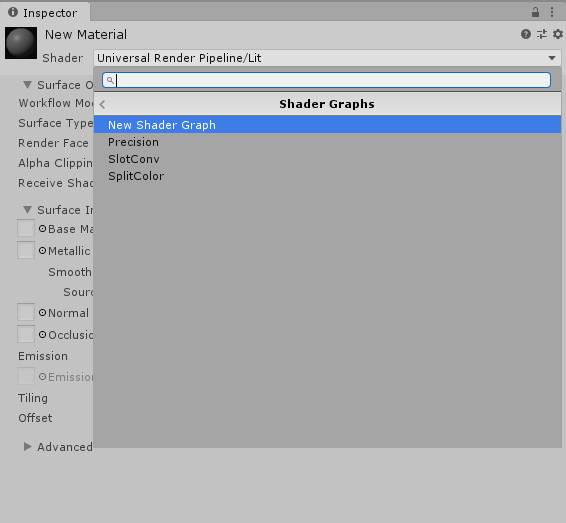

Before you begin, make sure that your project is set up properly, and the graphs are loading correctly. See Getting started with Shader Graph for more information.
Use the Create Node menu to create new nodes. There are two ways to open the menu:
In the menu, you can type in the search bar to look for specific nodes, or browse all nodes in the library. In this example, we'll create a Color node. First, type "color" in the Create Node menu's search bar. Then, click Color, or highlight Color and press Enter to create a Color node.
To build a graph, you need to connect nodes together. To do so, click the Output Slot of a node, and drag that connection into the Input Slot of another node.
Start by connecting the Color node to the Albedo slot of our master node.
Notice that the connection updated the master preview, and the 3D Object in the Main Preview is now black, which is the color specified in the Color node. You can click on the color bar in that node, and use the color picker to change the color. Any changes you make on the node updates the object in the Main Preview in real time.
For example, if you pick red, the 3D Object immediately reflects this change.
Currently, Shader Graphs do not automatically save. There are two ways to save your changes:
After saving your graph, use the shader to create a new Material. The process of creating a new Material and assigning it a Shader Graph shader is the same as that for regular shaders. In either the main menu or the Project View context menu, select Assets > Create > Material. Select the Material you just created. In its Inspector window, select the Shader drop-down menu, click Shader Graphs, and choose the Shader Graph shader you wish to apply to the Material.
You can also right-click the Shader Graph shader, and select Create > Material. This method automatically assigns that Shader Graph shader to the newly created Material.

Now that you have assigned your shader to a Material, you can apply it to objects in the Scene. Drag and drop the Material onto an object in the Scene. Alternatively, in the object's Inspector window, locate Mesh Renderer > Materials, and apply the Material to the Element.
You can also use properties to alter your shader's appearance. Properties are options that are visible from the Material's Inspector, which lets others change settings in your shader without the need to open the Shader Graph.
To create a new property, use the Add (+) button on the top right corner of the Blackboard, and select the type of property to create. In this example, we'll select Color.
This adds a new property in the Blackboard with the following options.
| Option | Description |
|---|---|
| Property button | To change the name of the property, right-click the button, select Rename, then enter a new property name. To delete the property, right-click the button, and select Delete. |
| Exposed | Enable this checkbox to make the property visible from the Material's Inspector. |
| Reference | The property's name that appears in C# scripts. To change the Reference name, enter a new string. |
| Default | The default value of the property. |
| Mode | The mode of the property. Each property has different modes. For Color, you can select either Default or HDR. |
| Precision | The default precision of the property. |
There are two ways to reference a property in your graph:
Try connecting the property to the Albedo output slot. The object immediately changes to black.
Save your graph, and return to the Material's Inspector. The property now appears in the Inspector. Any changes you make to the property in the Inspector affects all objects that use this Material.